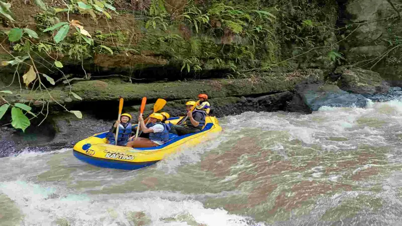

Lokasi arung jeram di Malang Raya umumnya berada di aliran Sungai Brantas, meliputi kawasan Batu, Ngantang, dan Kasembon, dengan karakter jeram yang berbeda.
- Arung jeram di Malang Raya umumnya memanfaatkan aliran Sungai Brantas.
- Sungai Brantas memiliki panjang sekitar 320 kilometer, dan karakternya berubah dari hulu ke hilir.
- Kawasan Batu, Ngantang, dan Kasembon sering disebut dalam konteks wisata arung jeram.
- Akses darat dari Kota Malang atau Kota Batu menjadi pertimbangan utama pemilihan lokasi.
- Titik operasi dan kondisi terkini perlu dikonfirmasi langsung kepada operator.
Di Mana Saja Lokasi Arung Jeram di Malang Raya?
Titik arung jeram di Malang Raya berada pada aliran Sungai Brantas, dan operator berbeda memakai segmen sungai yang berbeda sesuai izin, akses, serta kondisi debit.
Arung jeram di Malang Raya tidak dilakukan di satu titik tunggal. Beberapa operator menjalankan lintasan pada bagian sungai yang berlainan, dengan titik awal dan akhir yang ditentukan masing-masing.
Kawasan yang sering dikaitkan dengan arung jeram meliputi sekitar Kota Batu, Ngantang, dan Kasembon di Kabupaten Malang. Daftar ini tidak mutlak, karena titik operasi dapat berubah mengikuti kebijakan dan kondisi sungai.
Calon peserta sebaiknya menanyakan nama sungai, titik start, dan titik finish kepada operator sebelum memesan. Informasi ini membantu menilai karakter lintasan.
Bagaimana Karakter Aliran Sungai Brantas di Wilayah Malang?
Sungai Brantas di wilayah Malang memiliki karakter berbeda dari hulu ke hilir, dengan aliran pegunungan lebih deras di bagian atas dan melebar di hilir.
Sungai Brantas memiliki panjang sekitar 320 kilometer dan menjadi sungai terpanjang kedua di Pulau Jawa (sumber: Balai Besar Wilayah Sungai Brantas, data profil sungai yang dirujuk hingga 2025). Panjang ini membuat karakter sungai berubah dari satu segmen ke segmen berikutnya.
Bagian hulu di lereng Gunung Arjuno cenderung lebih curam dan berarus kuat. Ke arah hilir, sungai umumnya melebar dan alirannya lebih tenang, meski jeram tetap dapat ditemukan di titik-titik tertentu.
Karena karakter ini, tidak ada satu deskripsi yang berlaku untuk seluruh lintasan arung jeram. Peserta perlu mengecek segmen yang akan dilalui.
Apa Daya Tarik Arung Jeram di Kawasan Kota Batu?
Kawasan Batu dikenal sebagai destinasi wisata alam dataran tinggi, dan sebagian operator memasarkan arung jeram di sekitarnya sebagai bagian paket petualangan.
Kota Batu berada di dataran tinggi dengan udara relatif sejuk dan banyak wisata alam. Kondisi ini membuat wisatawan sering memadukan arung jeram dengan kegiatan lain dalam satu perjalanan.
Namun, titik arung jeram yang dimasarkan operator dapat berbeda dari lokasi wisata lain di Batu. Peserta perlu memastikan titik start sebenarnya, bukan hanya alamat kantor atau lokasi pertemuan.
Bagi rombongan yang menginap di Batu, pertimbangkan waktu tempuh dari penginapan menuju titik start. Jadwal pagi biasanya membutuhkan persiapan lebih awal.
Apa Keunikan Arung Jeram di Ngantang dan Kasembon?
Ngantang dan Kasembon di Kabupaten Malang dikenal sebagai kawasan tempat sebagian operator menjalankan arung jeram Sungai Brantas dengan lintasan alami berlatar lanskap pedesaan.
Kedua kawasan ini berada di Kabupaten Malang dan sering disebut dalam konteks wisata arung jeram. Lanskap pedesaan dan alam di sekitar sungai memberi suasana berbeda dari wisata perkotaan.
Karakter jeram di setiap segmen dapat berbeda, sehingga operator biasanya menyesuaikan lintasan dengan kemampuan peserta. Pertanyakan kelas jeram dan jarak lintasan untuk memastikan kecocokan.
Karena kondisi sungai dapat berubah, deskripsi umum tidak menggantikan informasi terkini dari operator. Konfirmasi jadwal dan kondisi debit sebelum berangkat.
Bagaimana Akses Menuju Lokasi Arung Jeram dari Kota Malang?
Akses menuju lokasi arung jeram Malang umumnya lewat jalur darat dari Kota Malang atau Kota Batu, dengan waktu tempuh bervariasi menurut titik start.
Wisatawan dapat menggunakan kendaraan pribadi, kendaraan sewaan, atau layanan antar jemput operator. Waktu tempuh dipengaruhi jarak, kondisi jalan, dan lalu lintas.
Jalan menuju beberapa titik start dapat berupa jalur desa dengan lebar terbatas. Rombongan besar perlu menanyakan apakah bus berukuran besar dapat masuk atau harus berpindah kendaraan.
Datang lebih awal dari jadwal membantu menghindari keterlambatan. Pengaturan waktu juga penting karena briefing dan pemakaian perlengkapan membutuhkan waktu.
Faktor Wilayah Apa yang Memengaruhi Pengalaman Arung Jeram?
Faktor wilayah seperti curah hujan, debit sungai, dan kondisi cuaca di hulu membuat pengalaman arung jeram di Malang berubah antarmusim, sehingga jadwal perlu dikonfirmasi operator.
Hujan di hulu dapat meningkatkan debit meski cuaca di lokasi tampak cerah. Karena itu, keputusan operator sering didasarkan pada pemantauan kondisi sungai, bukan sekadar pengamatan langit.
Musim hujan umumnya membuat arus lebih kuat dan jeram lebih besar. Musim kemarau cenderung membuat aliran lebih rendah dan lebih bersahabat bagi pemula.
Peserta sebaiknya menerima keputusan operator jika kegiatan ditunda atau dialihkan. Ketentuan penjadwalan ulang sebaiknya disepakati sejak awal.
Bagaimana Memilih Lokasi Sesuai Kebutuhan Rombongan?
Pemilihan lokasi arung jeram bergantung pada kebutuhan rombongan, seperti keluarga dengan anak, tim perusahaan, atau pelajar, karena kesulitan dan fasilitas tiap titik dapat berbeda.
Keluarga dengan anak sebaiknya memilih lintasan dengan kelas jeram rendah dan ketentuan usia yang jelas. Fasilitas bilas dan area istirahat juga menjadi pertimbangan.
Tim perusahaan umumnya membutuhkan lokasi dengan kapasitas rombongan, jadwal fleksibel, dan fasilitas pendukung seperti konsumsi. Pelajar membutuhkan pendampingan ketat dan izin dari sekolah atau orang tua.
Bandingkan beberapa lokasi berdasarkan kelas jeram, akses, fasilitas, dan reputasi operator. Panduan memilih operator arung jeram Malang terpercaya dapat membantu dalam tahap penilaian.
Apa Wisata Lain yang Bisa Dipadukan dengan Arung Jeram?
Arung jeram di Malang Raya dapat dipadukan dengan wisata alam dan kuliner lokal di sekitar lokasi, selama jadwal memberi waktu istirahat dan perjalanan pulang.
Setelah arung jeram, peserta biasanya lelah dan membutuhkan waktu untuk bilas, makan, dan beristirahat. Rencana tambahan sebaiknya tidak terlalu padat.
Wisata alam dan kuliner di sekitar Kota Batu atau Kabupaten Malang dapat menjadi pilihan. Pastikan jarak dan waktu tempuh realistis agar tidak terburu-buru.
Rombongan juga dapat membaca rincian biaya dan paket arung jeram Malang untuk menyusun anggaran. Gambaran umum pengalaman tersedia dalam panduan sensasi arung jeram Malang.
FAQ
Sungai apa yang dipakai untuk arung jeram di Malang?
Arung jeram di Malang Raya umumnya memanfaatkan aliran Sungai Brantas, dengan titik operasi yang berbeda menurut operator. Peserta perlu menanyakan segmen yang dipakai karena karakter jeram dapat berbeda antarlintasan.
Apakah lokasi arung jeram bisa dijangkau dari Kota Malang dalam sehari?
Lokasi arung jeram di Malang Raya umumnya dapat dijangkau lewat jalur darat dari Kota Malang atau Kota Batu dalam satu hari. Waktu tempuh bervariasi menurut titik start, sehingga rencana perjalanan perlu dikonfirmasi ke operator.
Apakah kondisi sungai sama sepanjang tahun?
Kondisi sungai tidak sama sepanjang tahun karena debit dan arus berubah mengikuti curah hujan serta cuaca di hulu. Operator menilai kondisi terkini sebelum kegiatan dan dapat menunda jadwal demi keselamatan.